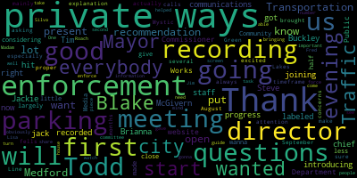

[Lungo-Koehn]: Good evening, everybody. Thanks for joining us recording in progress. This meeting is being recorded so you just have to hit the got it. So, again, good evening everybody. Mayor Brianna here. I wanted to first start just by introducing some city staff. We have Steve our communications director labeled Jackie right now but we also have chief jack Buckley. We have Todd Blake our director of Traffic and Transportation. And we have Tim McGivern, our Department of Public Works Commissioner. And we thank you for being here. We are recording so that we can put it on our website and put it on Medford Community Media, considering that Medford is so largely made up of private ways, less than half, but we have a good close to 40% that are private ways. And we wanna just give a little explanation of private ways. And this is mainly for the enforcement on private ways. We get a lot of calls asking questions, especially since we have the fells and we have the Mystic Lakes. We have a lot of parking concerns that are always brought to our attention. And then we wanted to have this meeting several months before the Green Line actually opens, which we are excited about. It's going to open in August, September timeframe. And we want to make sure that you have the proper information so that you're able to enforce on your private ways, which we know is gonna be important. And this was also a recommendation of the parking task force. I know I see Fred Roach, who was on that committee, as well as Jim Silva, who helped guide the city in bringing parking enforcement in-house and obviously gave us a number of recommendations for private ways and enforcement. So with that, I'm going to, turn it over to Todd Blake our director of traffic and transportation to start us off. Thank you.
[Todd Blake]: Thank you everyone for coming in, attending this q amp a session. As the mayor mentioned. Many times throughout the course of the, you know, our, our business, and throughout traffic commission meetings, and the commission park policy enforcement meetings. This is a consistent question that comes up regarding private ways, particularly if the city's traffic commission is not able to post resident parking on a private way, then what What is left for private way residents to do about that so this is to try to help guide and explain and inform the public of what their options may be based on our interpretation of master in a lot. We do want to specify with a big asterisk that none of this is any to be construed as any official legal advice regarding. park on private ways. This is just our understanding and we're trying to guide and inform people since we've been informed by others that there was a lack of information on the subject. So we're trying to improve upon that and have this dialogue and discussion with all of you. So in terms of enforcement, So we have had requests in the past resident parking on private ways but but based upon the law, the master log, our interpretation of it is that the owners of that. One thing is very clear the city does not own. private ways unless we're a butter to the private way, or. So, one thing that's very clear the city doesn't own it in the master law refers to the owners of the private way may do this and may do that. So, so we know that the city is not the owner that others are the owner and so the, whoever the owners may be of a private way certain rights to restrict parking. So we're hoping to, you know, there's a process that the police may refer to in the documents that we added to the city's website regarding if owners of a highway do take that route and post signs for residents only, there's a certain process that has to be followed before they tow someone. And the document that's online explains that and the chief could touch upon that as well.
[Buckley]: In a sense, private ways, private property, we can look at that. We'll get into discussion of what the city will provide for services on this sort of way, because we have to provide certain services for public safety reasons. And under that guise, the city ordinance has passed regulations of what the police department can enforce, right? And I'm gonna run those down, the seven aspects of, When an individual parks in a private way that is a non resident right. In some cases, even the residents, for example, you can't park and unregister uninsured more vehicle in a private way, the police can enforce and take action on that. You can't park a vehicle within 10 feet of a fire hydrant for obvious public safety reasons. You cannot block or obstruct a driveway on the areas, and you can't park within 20 feet of an intersection. You can also not park your vehicle in such a manner that it would block an emergency vehicle from having access to the street. Ambulances, fire trucks, police vehicles need access to every residence, even on private ways, and if you block or obstruct that, we can do enforcement. The same goes for blocking or obstructing a snowplow during a snowstorm, right? And we have to provide a clear path for those emergency vehicles. And so the snowplows need access to move the snow so that emergency vehicles can get there. And the last one is a 48-hour restriction, right? It follows, in some sense, the abandoned motor vehicle law in the Commonwealth of Massachusetts, but if somebody parked on your private way and left that vehicle for more than 40 hours, who's a non-resident, we could enforce and tag and remove that vehicle. That's a city ordinance, that's statutorily what we can do. Outside of that though, and unfortunately, because it is a private way, we have no authority in the police. I know we could commonly ask questions, why can't the police just come up and enforce this vehicle? But there exists no legal premise or statute for us to be able to do that. And, Having said that many times over the last three years, we still get the questions about, you know, why can't you? And just think of it as this like... If the loss is private property, I couldn't come in your driveway and tow your vehicle for no reasons. It's similar. And I can't send my police department to enforce laws that are not public way laws. And it puts the city liable for enforcement on that. And that's a quick and, you know, sort of straightforward assessment of what we can do in limited enforcement, but it's not generally what we're called for. And so I know that when we get into the question and answer section, there'll be a lot of other questions related to that, and I'll be prepared to answer them as best we can. Todd, I think in the chat there was a question how do we know.
[Todd Blake]: Yes. I just responded to that saying, we, the city has a list of public and private streets, I believe it's already posted on city website but maybe we could post in the chat link to it. That list is is somewhat generic in the sense that it listed by entire street there are some streets that are portions of them a public and portions of private so if anyone has any question about that, we could help answer that as well.
[Buckley]: Here we go. I think we're just going to get into answering a lot of questions as they start to pop up. Yeah, you can move back and forth. But I did see like one of the first questions was, how do we document and demonstrate that a vehicle's been parked on a private way for more than 48 hours. So there's two sort of aspects of that. You first have to notify the police department. We would go out and just mark and notify and make notice that the vehicle is there and return 48 hours and if the vehicle is still there, we would move the vehicle under that statute. But don't forget, this is a private way. And if you comply with the statute that we're talking about today, 48 hours only a legal standard for the police to remove the vehicle. If you post it that it is a private way and you give fair notice, owners on a private way could remove that vehicle, you know, immediately. So that the 48 hour notice is really only for purposes of the police actually doing the removal of the vehicle.
[Todd Blake]: So another question appears to be specifically about Parkway Road and Equavia. We do list those as private ways on our city website so if a street like that may have had resident permit posted in the past, it may have been a mistake to do so. So we're trying to go forward with adhering to what we believe the rules to be regarding private ways. With the exception of the safety violations on a private way, we believe the onus is on the owners of the private way to restrict parking to residents only not city because the city is not an owner of that way. There's another question about, can we opt out of being a private way. It's interesting way to say it. There's a process to request to be accepted as a public street but that's, we're not. We weren't envisioning getting into that process at this meeting but there is a process to do so.
[SPEAKER_02]: I think it's important that we do get into that if possible, because I mean, I hear the word private and I mean, usually there's like some benefit to that, but I just don't see any benefit. And it seems like there's just a lot of cost involved. And I know private ways proceed probably almost everybody who's here, but it just seems like, you know, people use our road all the time. The wear and tear is not just done by the people who live on this road. And, you know, I'm one of those people who lives on Pond Circle slash Equavia slash Parkway. And, you know, people park there for the pond, people fly through there off of Elm Street. So I don't know if it's a private way, do we have the right to block it off as long as we're not blocking emergency vehicles or snowplows?
[Todd Blake]: Chief, I don't know if you want to dive in, but I'll attempt to answer that. So no, you cannot block it. It's a way that's available to others. So it shouldn't be treated as a gated community or something like that. It has to be available to the public. So some of the way a lot of these streets originate, I'm not going to say exactly for each and every street, but generally think about way back when, There was land, it was probably wooded land, and then at some point someone purchased the land and developed it and separated it into parcels and created a street. At that time, whoever did that didn't apply or didn't go through the process to be accepted as a public street. And that may leave you in the position you're in now. In terms of, I didn't track all the questions in that, but that's the general gist of that.
[McGivern]: Hey Todd.
[Todd Blake]: Yeah.
[McGivern]: I'll chime in here to say that if there are private way owners on furniture private ways and you'd like to discuss the process of going from a private way to a public way. You can talk to me personally and I will go through that with you. But I believe that this forum is specifically related to parking so I want to try to keep it, keep it, keep it there. I know a lot of the concerns out there having to do with, you know, why isn't this public? where private really kind of screws things up. The public does have a whole series of rights within a private way. You don't pay taxes on it, but it really, the question of title and rights is murky at best when it comes to legal things, but parking is pretty clear. The city does provide a range of services on private ways here in Medford that a lot of other towns don't provide. So snow clearing, for example, just an example. So anyway, With that, if you want to know specifics about the process going from private to public, we can save that for a forum or specific conversations with me with the city engineer. Thank you. Thank you, Tim.
[Lungo-Koehn]: So thanks, Madam Mayor, for having this meeting. One second. Lisa, if you don't mind, we just want to present first and then we're going to take questions. Todd, will you screen share the enforcement piece and what would need to be, can you present on that first? So that people will watch the recording and then questions will come after. Thank you.
[Todd Blake]: Absolutely. So some of the documents that have been shared on the city website is this document explaining, oh, this is the tow form, sorry. So, this, this is the first of three documents that are shared on the website, explaining private way restrictions what the police have the right to enforce on it. And what it touches upon references the mass general law. So people are open to read it interpret it as they see fit. We're just trying to guide and inform as best we can to help, because, again, we have heard that there was a lack of guidance or help or information on this so that's what we're trying to do here. So this is all available on the city website. So basically, to reiterate what I said earlier, it's basically saying the owners have the right to restrict parking, but they have to do it in such a way that's outlined based on that law. And then the police are trying to facilitate that by providing these documents. The next document is the petition itself. which basically the owners of the private way would submit this saying we the owners, you know, we contract with this tow company. Here are our signatures. We're saying that, you know, we're going to go through this process. And then there's a form that needs to be submitted. Chief, please interrupt me if I'm explaining it wrong. before a car is towed off your private way, assuming it was posted properly according to this master law, then you would inform the police department using this next slip here. So this is the tow form. that a private entity would submit to the police before towing a vehicle. So it's basically an FYI. It's not call the police to tow the vehicle for you. It's the owners of the private way have read the law and posted it per the law in contract with the tow company. And then in order they're FYI in the police that they are towing per this provision.
[Buckley]: That is a requirement under the law that you notify the police department so that we know where the vehicle is. We know what is going on in the street and it prevents, you know, report, you know, someone from reporting that the vehicle was stolen when it really wasn't. It prevents, you know, any of the arguments that could have, but not if you're doing an act private way towing, you have to notify the police prior to doors. We won't tell you no as long, you know what I mean? you operate under the existence of the statute in the private property that you're on, but we just have to be notified.
[SPEAKER_18]: Are you taking questions?
[Todd Blake]: Sure.
[SPEAKER_18]: Yeah, I mean, it seems very futile to go through this process by the time you do it the car could be gone and putting the onus on a resident of Medford to privately tow a car can start a whole cascade of problems. I think that's why we have our elected officials and police department to do that for us. I think that's a very poor idea to do that personally.
[Buckley]: So I just want to just add to that point and because I think we're going to get that sentiment all night long, but it's not an idea of the city of medfeds it's not a new plan. This is mass general law, we are bound to abide by the statute. and this isn't, it's not something that is new. Most cities and towns in the Commonwealth of Massachusetts abide by this same statute. We're trying, you know, I feel, I know you're going to feel as residents that it's a burden put upon you, but it is the statutes of the Commonwealth of Massachusetts that put upon us. It's not the City of Met. This is the law, and this is the only way I can't violate the law, because, you know, because it is more convenient, but this process works in most cities and towns in Massachusetts.
[SPEAKER_09]: I think. Thank you very much. I appreciate it and Mayor Thank you for holding this meeting and, and chief. Thank you specifically to one of your offices on Sunday night who came out and at 1030 at night to take up a car that was blocking my driveway and my neighbor's driveway. I'm on Fulton Spring Road and I know that some of my other neighbors are here and I'm on Fulton Spring from Felsway to Fulton Street. All of the renters on Fulton Street come and park on Fulton Spring Road. It is ridiculous. They stay here for days on end. They are parked right up to the corner. They've got no respect for driveways, fire hydrants, anything. It is absolutely incredible. We're a two-way street. We have eight drop-off and pickups. four in the morning, four in the afternoon, all the schools. This street is overwhelmed, not to mention the fact that people fly down the street at about 100 miles an hour. You know that. I'm not telling you anything you don't already know. It is this street. When I have to back out of my driveway, I make a sign of the cross. The first thing I do, because I don't know whether or not I'm going to live, pulling into my own street. I can't pull into my driveway. I can't back out of my driveway. It is so insane up here. So, with resident parking only. Can we at least get. I mean we can do that as a street.
[Todd Blake]: So, so yes, that's a great question. So, yes, the way we understand it is the owners of the private way whoever they may be. could contract with the tow company to post those that will come to post signs on your street. And, you know, if it's posted properly, you know clearly that's always own it's for that street residents only. There are some pieces of information that would be helpful to have on the sign to make sure that you don't ask the right questions.
[SPEAKER_13]: And just for one second, so just so we can go through this really and get to everyone who wants to ask questions and everything. I know some of you have been doing this, but if you can just raise your hand through the reaction and then we'll try to get everybody. And then also I know there's some questions in the chat. So I'm going to meet everybody so we can, everyone can ask their questions and we can hear kind of better what everyone is trying to say. So I think Lisa, I think you already asked your question. So I think we'll go to Fran next. So hold on, let me just. How do you sign up for the queue to ask a question? Go to the reaction on the bottom. Okay. And then I think you see the little hand, raise hand right there.
[SPEAKER_02]: I find it's also helpful if you write stack in the comments and then we could go that way. That can be useful.
[SPEAKER_18]: I don't see a raised hand. I see a thumbs up. Oh, here's a raised hand.
[Unidentified]: Okay. I hold on, hold on. Todd.
[Todd Blake]: Yeah, I was just going to finish my response to Lisa. So, so the owners of private way could contract the toll company to post signs the science to say certain pieces of information make it clear to everyone that that is a total offense and they're going to get told. So I do have an example of a sign in Somerville, as I just wanted to go backwards a little bit and say that yeah Medford is a little unusual in the number of streets that are private as compared to some of our neighbors, but, but as the chief said, this does exist elsewhere. And one example is from Somerville assigned from some of that I could show you that, you know, it gives. We're not saying this is a sign you have to use or anything like that we're just trying to provide information to the public of what you know the options may be for you. So here's an example of Woodbine Street in Somerville. They contracted with, in this case Pat's towing. It has the tow company's name, the phone number, clearly states that unauthorized would be towed, and it specifies the street that it pertains to in the residence. So this is a, you know, these are just two examples, one color, one black and white. But that's the, and then in terms of the city. The city may assist in the form of putting a sign at the entrance to a private way that indicates that, you know, whether it's on the street name sign itself and it says, excuse me says private way or assign like this under a street name sign that says private way, this should read parking maybe for residents only. But it kind of warns the public that, you know, you're entering a street that's not public anymore. So look for these signs.
[SPEAKER_09]: See that thank you very much for the clarification. Thank you.
[SPEAKER_13]: Herb is next. I'll get to him.
[SPEAKER_06]: No, I was I was.
[SPEAKER_13]: Oh, I'm sorry. Sorry.
[SPEAKER_06]: So I live in the old high school, and my unit faces Hall Ave, I look down on Hall Ave, and Hall Ave is a nightmare. Everybody's probably used it, but between the fire trucks and so forth that use it to get up to the senior housing behind us and the commuters who use it to cut through so they don't have to wait at the light, it's just bedlam, absolute bedlam. And they, The potholes that appeared during the winter are ridiculous. And we can't pave the street unless we pay for it ourselves. And it's not like we have a cozy little neighborhood here. It's like our building and then scattered other houses. But I don't know anybody else who lives on Hall Ave.
[Todd Blake]: Excuse me, Trent. I just want to ask, do you have a parking-related question? Just because there's a lot of folks waiting in line to ask questions. And as Tim mentioned earlier, we could potentially have some other forum, some future data about other things other than parking.
[SPEAKER_06]: But in a way, I do. Because with the Chevalier Theater here, people park wherever they want. And I know they're not supposed to park within four feet or whatever it is of a curb. They're not supposed to block driveways, and it happens all the time. And I just, I don't see the reality that people are going to respond to all the complaints that we can have.
[Todd Blake]: So this process that we're trying to help inform folks with, you know, could help. the parking situation that you just described on Hall Ave. So if the owners of Hall Ave went about this process and got these signs and posted them, then the tow zone signs may have an impact to people, whether they're coming to a theater event or otherwise from parking on your street.
[SPEAKER_06]: But it has to be we who are the activists.
[Todd Blake]: I mean, whoever the owners of the private way may be.
[SPEAKER_06]: Right. We don't know, since we don't know any of the other owners on the street. We'd have to go knocking on doors or something right.
[Todd Blake]: So yeah, one of the forms, well however way you go about doing it, one of the forms that I'll share it again. It has a petition form that shows the owners of the private way signed it and say we hereby are contracting with this tow company. Go back to that one.
[SPEAKER_13]: I think in case he is next.
[Todd Blake]: So, the owners of the private way would all sign this and say that they're, they've contracted with the tow company, and they're forming the city that this is what they're doing. And to anticipate future requests or not request future. FYI, so please departments and the other form that they're telling someone, I can get this at City Hall. This is that form is online at the city website. I'm sure we can make it available hard copy at the city as well. You don't have to use that form, I don't believe for the petition. That's just one mechanism for the owners to use to help inform the city that that's what the owners are going about. Okay, thank you. That's correct, Chief.
[Buckley]: That's correct. And I'm just going to add real quick, because I see a number of the questions in the chat, and it might help eliminate some of them. If they're blocking your driveway on a private way, call the police. We can do something about blocking the driveway. That is one of the ordinances that we can enforce. So a number of people put that in the chat. I just thought I'll hopefully resolve some of your issues.
[SPEAKER_03]: I think I was next.
[SPEAKER_12]: No, wait, they called my name. I think Casey's next. Thank you. Along those lines, we just had this happen last weekend. And we did call the police. There was a motorcycle parked in our driveway. It wasn't blocking the car so they couldn't get out. So it wasn't blocked, but it was in our driveway. So I just want some clarification on because the police did not want to come and tell it, they said it was our responsibility, even though it was technically in our driveway. So that is question number one and then question number two did I hear correctly, that the city can post resident parking signs.
[Todd Blake]: So, I'll address the second question first. So, in one of the recommendations from the Commission on parking policy and enforcement. It was recommended that one thing the city could potentially do to help would be to post a sign at the entryway near the street name sign that says this a private way parking may be restricted to residents only like as a warning or notice. but that wouldn't negate the need for the owners to have the signs on the street themselves with the tow company and all that. So it would purely be informational only. It wouldn't say this is the restriction. It would just be a warning to other residents that are leaving a public way into a private way.
[SPEAKER_12]: That would still be helpful. So I live on Lakeview and it's a short street. If you put a sign on either end of that, that would be helpful because on the street sign, You need major magnifying glasses to see the word private way. There's nobody that's ever going to see that.
[Todd Blake]: Yeah, we're evaluating that and we're working towards something to help address that.
[SPEAKER_12]: Okay, thank you. And what about the situation that just happened with me with the motorcycle in my driveway that didn't want to deal with it.
[Buckley]: Yeah, so not to complicate or confuse the matter but in private way now is a way where While it's deemed private, there's access to the public to use as a way, right? So they'll go through. And for public safety reasons, we have the authority and right to enforce certain violations on the way. Once you transition onto your property, whether it's your front lawn or a driveway, that's strictly private property. And again, I'm not telling you this is my opinion or because I don't want the police officers to do it. By statute, by law, we cannot send it and remove something from your private property, even if it doesn't belong to you. such as a motor vehicle. It's odd that it happens, right? I think some people in the public are shocked that somebody would just park in your driveway. It does happen throughout the year and we have no authority and we have to act under legal authority or, you know, as the police department, we cross certain lines and we get ourselves in trouble, but we are not allowed to do that by statute. And so it gets difficult for us to sometimes explain that to people. And I don't know if this is a perfect comparison, but if you think of, say, Wegmans, they own a big parking lot in a private property. If they say, hey, we don't want you parking in this area, well, they can tow you, right? We wouldn't go down there and tow them unless it was for certain specific public safety type areas. So a private property owner can just say, you can't park on my property. I own the property. I have direct control of the property, and you have to remove it. But we can't, as a public entity, go onto your private property and enforce those things. So, is this there I get it we're talking about private way but there is a difference and once they're on your private property, we have no authority to act. It's not the answer you're looking for but I think it's two points.
[Todd Blake]: Tim, not to put you too much on the spot but if you had a sentence that explains the difference between private way and private property or parcel, that would maybe be helpful.
[McGivern]: private ways, the public has rights associated with the way, and you don't pay taxes on it. And it's a parcel of land that's designated for access to the buildings that are on it. So, the only difference that it really has not been accepted formally by the city and there's a process for that that was referred to earlier. So, you know, that's how streets begin. I saw some questions about, you know, converting it or removing the private way aspect of it. What begins as private property all begins as private property, and it is a either a donation or taking by the municipality to make it a public way that can be an easement or title.
[SPEAKER_13]: Okay, I think Rachel's next.
[SPEAKER_19]: Hi, sorry, I was just unmuting. So one of my questions was in the chat, which is that I am on a private way, but part of my driveway is part of my yard is paved and people keep parking in that even though I have a sign that says private property, no parking. So obviously, I understand now that the police cannot come and remove people from my yard. So do I have to personally contact a towing company and put a sign in of my yard that says this towing company will tow you if you park here. Is that like separate from the private way signs we would need to get? Because this actually happens daily. I'm right by the fells and there's somebody parked on my lawn daily. Wow.
[Buckley]: So I here's the best and quickest answer I can give you so that I recommend all the time that anybody was private property post something at least to the minimum of this is no trespassing right to your private property they can as soon as it's posted fair notices given. Right.
[SPEAKER_08]: Okay.
[Buckley]: Again, that's not a way right where we want to post it slightly private and they pull up onto that property, you have the authority to have that vehicle removed by law. Now, I still say according to statute, you have to notify the police department that you're doing it so that we know what's going on. And then we can, when the owner calls and says, Hey, Mike, I was told, we can explain to them that it was properly notified and properly acted under the law. But yeah, I mean, Again, I don't want to just, we have to be careful about jumping into the rights of private owners, private landowners. And you can post anything you want there and give them fair notice, but enforcing it, it would be on you. But a simple no trespassing sign, because you can trespass by motor vehicle, et cetera, onto your vehicle. So just put that up there and you would benefit. I suggest everybody does that to the property anyway.
[SPEAKER_19]: Okay. And my other question, which is related and also somebody else asked it in the chat is, I'm on a corner, and my address is on Governor's Ave, which is a public way. But my side yard, as well as my driveway is on a private way. So am I an owner of that private way?
[Todd Blake]: I'll answer this and then Sam if I botch it you could jump in but basically, if you're a corner lot, you still have you but the private ways so you likely very likely still have rights to it. And you may be an owner that. So, yeah.
[McGivern]: Yes and no. This gray area here, so I would tread carefully on giving any advice in this area, but you look at things called frontage and look at how the way is laid out. So if your private way has boundary lines and is attached to Governor's Ave and Governor's Ave is public and you have frontage on both, then zoning is gonna define what that frontage means on the public way, but not necessarily on the private way. So frontage is related to rights of a parcel owner, a building parcel.
[Todd Blake]: Thank you for saving me on that one, Tim. So it's a good opportunity to reiterate that none of this should be considered official legal advice. This is just general information guidance to try to help folks. So in that regard, I guess I could restate that the Mass General Law refers to the owners of the private way, and I would say whoever those owners may be, and we don't necessarily know The city doesn't necessarily know beyond the owners of their butters to determine that.
[SPEAKER_13]: I think Herb is next.
[SPEAKER_03]: Okay, so I'd like to pick up for a second. I know this forum is packing, but I'd just like to pick up on what Fran said before. I live on Whittier Road, which is a private way. And the road is like a minefield of potholes. They fill them in, but we all know filling in a pothole lasts about a week. There's a lot of city, you know, Eversource, I think is doing some work on Winthrop streets. We got trucks back and forth. So the real question is, well, I'll give you one thing. 30 years ago, we all chipped in. The town put in half and the residents, we all put in about seven or $800 the town did, and we had the street repaved about 30, 35 years ago. So the question is, without going through the process of becoming a public way, how can we get our street, our private way repaved? Or do we have to go through the process of becoming a public way? You got this one Tim. Tim do you want to.
[McGivern]: Yeah, it isn't parking related. But I will, I will say that there have been programs in the past city has had where private way owners can get together and partner with the city on payment jobs restoration, I would say that right now, our primary focus is to try to manage the roadways that we are obligated to manage, which are the public ways. That's where our state aid comes from, and we try to use every single penny of it in the public way. That doesn't mean that the city hasn't in the past and can't in the future partner with public, sorry, private way owners. It is, I believe, allowed by ordinance. to do things like that. And I know private way owners recently have partnered with National Grid, because National Grid will come in, replace the gas line and only pave half the street. So, there's efficiencies there I know that has happened. And besides that, you know the city does. kind of take a look at private ways because the DPW also looks at the public safety aspect as well and keeping things clear. So we, you know, have a very relatively long history of doing things like plowing private ways and filling craters that are dangerous on private ways. I don't think that any of that is really going away anytime soon because we do need to maintain public safety and passage, right, through the ways. We don't own and don't have the at the moment don't have really the capacity to be paving private ways, but the title owners of those way parcels certainly have the right to do that. Absolutely.
[Todd Blake]: The one of the main reasons for this meeting and we would love to continue the conversation on other topics but for parking. It seems to be a more pressing issue, particularly in this hillside and South Medford areas because the Green Line extension is going to open. So streets in those neighborhoods, maybe concerned with how to manage the overflow of parking that people may want to park there all day long to hop on the T, and then we know that other streets that live near the recreational facilities may may. may experience that as well, so.
[SPEAKER_18]: Yeah, it's gonna be like a parking lot, a tea parking lot.
[SPEAKER_03]: Thank you, Herb. Yeah, well, just one last question. So I understand that's a big problem with the Green Line Tea, but could we, to start the process of conversion to a public, from a private to a public, who should we talk to? Yes. Okay. Okay. Cause I know it, it'll be a process, but if we want to get it started, Tim's the one to go to. Yep. I'll walk you through it. Okay. Very good. Thank you. Okay. L L Rocco is next.
[SPEAKER_08]: Hi. Can you hear me?
[Unidentified]: Yes.
[SPEAKER_08]: Yeah. Okay. I live on university out across the street from perhaps university. and Tufts University owns the house to the right of me. Now, students are not allowed to park on the street. I've approached Tufts numerous times about informing their students not to park on the street. Finally, they keep on informing the students, but obviously they have no respect for the law and they continue to park there. Can I call the city of Medford and have them ticketed?
[Todd Blake]: No, if it's a private way, no.
[SPEAKER_08]: Why can't I have them ticketed? They're not supposed to be parking on the street.
[Buckley]: Can I ask two questions while I kind of think this through? Who owns, the Tufts students live in the property, who owns the property? Tufts University or is it a private owner?
[SPEAKER_08]: Tufts University owns the property. Okay, and who restricts them, who has restricted them from parking on the- The university informs the students that they are not allowed to park on the street. So there's probably anywhere from 10 to 15 students that live in the house. And a lot of times they have friends coming over or they park and they're literally blocking my driveway halfway. I can barely get out. So I've been to Tufts University numerous times about the situation. They told me I have to go to the city of Medford, tell the police, and that they will come and ticket them. That's what I was told by Tufts University.
[Buckley]: And when you say Tufts University, was it the Tufts University police or was it another administration there? And the only reason is I'm gonna try to follow up on them tomorrow.
[SPEAKER_08]: It was somebody from management. His name is Rocco. I can't pronounce his last name.
[Buckley]: Okay. I know Rocco. So the answer is still the same, right? So it's a private way. We cannot enforce. If Tufts University tells, you know, their renters or their residents that they can't do something on a private piece of property, I still cannot send my police department. So the advice that is being provided to you that the Medford police will come up is not accurate. We cannot do anything on a private way. That being said, I mean, I know Rocco, I'll reach out to him tomorrow and express your concerns to him. And if you want to follow up in a couple of days with him, perhaps at least he'll know that I have talked to him and told him that it is not accurate that the police will come up there and that maybe Tufts University has to do something more for them. But that's the best I can offer you for there because it is still private way. And we'll see what happens as a result of that.
[Todd Blake]: Thanks, Chief. And if there's anyone else on the call that lives on a private way that also has Tufts University as a landowner, then they got this answer. So hopefully, if they're experiencing similar issues, they don't necessarily have to repeat the question. The Chief's going to make a reach out to Tufts University.
[SPEAKER_13]: Yeah, we want to get to every question I mean, we'll probably be taking questions till 715 ish but there's a few questions in the chat, that's all we could get to that would have some quick answers. What percentage of roads are private ways in Medford.
[Todd Blake]: It's roughly 38%. 30% but in terms of, in terms of miles. It's, it's much less in terms of your feet, but in terms of the number of streets at 38%.
[SPEAKER_13]: Okay, can this can the city can city ordinance be passed to allow the city to post signage and ticket in tow.
[Buckley]: So we've had that reviewed by legal counsel and to no avail. We have not paid the authority because state law and private properties have sort of restricted the city from sort of assuming that authority. If it's a public safety, clear public safety issue or impact, you know, like blocking the roadway or something along those lines, we can enact an ordinance. But if it's simply someone who's parking on your roadway on a Sunday, because they want to access uh, the trails or the beach. I mean, uh, mystics, something along those lines. We can't.
[SPEAKER_13]: Okay. Uh, Faye Reich is next.
[SPEAKER_18]: Yes, I'm concerned because I live right near Tufts and the Green Line and there is going to be nothing that we can do. There are six two-family houses on the small street. Once the T opens, we will have no power for people to just be commuters and park their cars there. We can't fill out the forms because they're going to be gone by the time you process it. You know, our street is going to become a parking lot for the T.
[Todd Blake]: So this process or this mechanism may help folks that have issues with people parked on the street, because it puts the control in your hands in terms of contracts with the tow company and posting it. Until you do it, the sign itself may be a very good deterrent, maybe even more so than ticketing by Medford on a public street.
[SPEAKER_18]: Yeah, but you're hiring a tow company. We're opening ourselves up for litigation. by doing it privately. Now, can't you at least issue Medford resident stickers and have that be that if a car is to park on a private way they need a Medford sticker.
[Todd Blake]: So unfortunately no that's, that's one of the reasons to have this meeting to help inform folks in that people that live on private ways have come to the city to request just that, that the city post signs and resident stickers, but we're saying that, you know, we do not own those streets so based on master law. Again, this is not official legal advice. The interpretation is that the owners may go about doing that in the city is not an owner of that private place.
[SPEAKER_18]: Well, the problem is on our street, I live on Edison Ave. There are six houses, four of them are rented out to tough students. The landlords don't care at all about who parks there. You know, I had trouble getting into my driveway when a neighbor called and there was a car parked on Tesla, which is not a private way. She was told that the police couldn't tow their car. What was that about? It happened a couple of weeks ago. She called the police. The car was parked on Tesla. It had a Somerville sticker. The police came out and they said, no, we can't tow the car. I know the person's on this call or was. What was that about?
[Buckley]: Well, let me take a look real quickly here for a second.
[Todd Blake]: Yeah, because other people are waiting.
[Buckley]: Sorry, just real quick Tesla's a public road and you can park a vehicle road and I'm not if it's resident, I mean I can take a look and I don't want to drag this meeting out and see if this resident apartment parking but it's a public road you can park in a public road.
[SPEAKER_18]: But it was not a Medford that don't you need a Medford sticker to park on Tesla. It was a Somerville sticker this purpose.
[Buckley]: So I'm going to take that as a resident private parking road but in general in a public road you can live anywhere in a public road. We do have restrictions on some roads related to a resident price.
[SPEAKER_18]: And I'd have to take a look at that and see what it is but if my office didn't tell it because some people have gotten tickets on Tesla and other people have not. And I think it's, you know,
[SPEAKER_13]: I don't know we can well you can look into that thing and give you a contact you back if you want to drop your email in the chat or direct message me.
[SPEAKER_18]: Okay, but I'm just saying when the tea comes. This is going to be a nightmare people are going to come home from work, and not have a place to park their car, because there's nothing we can do to remove the car by the time you fill out a form, take it down to the police station, send it in they're going to be gone. It's just not a solution. I'm not hearing any viable solutions to the problem of the tea coming in, none.
[Todd Blake]: In order to move along, we will reiterate once that, as the chief mentioned, this is not a rule change or change this law already existed with trying to help inform folks. Medford is not taking it upon himself to change anything in that regard.
[SPEAKER_18]: Yes, but things are changing you know the tea is coming. You know, I mean, other towns, you can't park your car anywhere near a T in Cambridge if you don't have a Cambridge sticker.
[Todd Blake]: So someone, that's a good segue to answering one of the chat questions, Steve. Someone had mentioned in the city of Cambridge, they do have this system. And so on private ways in Cambridge, they post signs like this. And then there was a question about how do the tow companies know who's who? So basically, in that example in the chat, I'm not aware of this but I'm just repeating what was in the chat, that particular street may have developed their own sticker for that street, but basically it's my understanding that between the owners of the private way and that's who company they figure out a system to either track it by license plate, or what have you, it's between those two parties the city's not involved in it. And there is a way. that other tow companies in other cities have figured this out so it's not something brand new that didn't exist that folks don't know how to go about yeah but what you could do for like tesla avenue is it's a public road is put up two hour parking only
[SPEAKER_18]: Right. And that's going to stop any commuter who wants to take the T and the town can do that Tesla is not a private road. If you put up, you know, it's public hours you're not going to get people leaving their car there all day.
[Todd Blake]: Each public street has the ability. We have no. We have to move on to the next question. I understand just answer the question. Yes. So each public street has the ability to go to the traffic commission and request the change in parking regulations on the public street. So people on that street. And if people want to our park and they could go to the traffic commission request that, but it's usually driven by whoever lives on that street.
[SPEAKER_18]: Right, so when you know we on Tesla all these houses are rented by students, the landlords don't care at all who parks there. You know, they're not going to sign off on a petition. You know, and it's, it's, you know, you have a chance now to avoid a nightmare situation with the tea coming and I don't see any solutions. All you're telling us are what the laws are. How about some solutions.
[Todd Blake]: Yeah, this will, this will be one last response. The solution is on a public street to apply for resident parking is a great way to go apply for resident parking. That's a great way to go through this process.
[SPEAKER_13]: That's Heather heard is next.
[SPEAKER_16]: Heather is next. Hi, I'm hearing an echo I don't know if anybody else is hearing an echo. So, I live on a private way in West Medford, I'll make it quick. Can Mr. Blake or Chief Buckley address. In our city ordinances, there's a rule that anyone can park on a private way for up to 48 hours before you can have them towed. And I know this because I live on a very small private way, and there was someone who used to visit, someone who lived on Brook Street, actually, and park all the time with New Hampshire plates on my street. And I actually went to the city and said, are they allowed to do that? And, okay. Thanks for sharing that. So a non-resident on a private way shall not be permitted to park more than 48 hours. Okay, so what I'm hearing, I was a few minutes late, so I don't know if I missed something, but what I'm hearing is that residents of a private way can fill out a form, a petition, contact a towing company, and contract with them directly and have people towed. So, but what happens if the resident has somebody towed before 48 hours has gone by? I think they can also be fined and then have to pay the towing fee. Is that correct or incorrect?
[Buckley]: So it's, let me see if I can explain it this way. The ordinance is what allows the police department to remove a vehicle from a private way. And so in order for us to, the police department to remove a vehicle, it needs to have been at least there, parked there for 48 hours. A private owner or a private way, the owners of a private way can post and give fair notice and remove someone who is not a resident or invited guest and have that move anytime they want in violation of their posted notices. So it's two separate things, right? So we're saying that we have limited authority as a police department on a private way. And one of those limited authorities is if somebody say abandons a vehicle for at least 48 hours, we can then go in and remove that vehicle. But as the owners of the property, you can remove it in less time. So you're not bound by that that that's the restrictions on the police department.
[SPEAKER_18]: I hope that correctly. So you're saying that if there's a vehicle on a private way that's been there more than 48 hours the police can tow it.
[Buckley]: correct. And I'm saying that you would have seen it notice so we can take notice show up and view the vehicle and take notice of the vehicle is location and 48 hours we would return.
[SPEAKER_16]: Okay, but in order for a private resident, they have to have posted parking for residents only contracted with a towing company, given them fair notice, and then have them removed. Correct have that vehicle removed, and it can be within 48 hours can be 24 hours.
[Buckley]: Correct. You have different rights than I have this. Okay. All right.
[SPEAKER_16]: Thank you very much.
[SPEAKER_13]: That's Richard Schultz is next.
[SPEAKER_05]: Todd, I'm going to direct this to you. Um, you have said that in this man, this is a parking related question that the city does not own the private ways. That I live on a private way and I own it. Now, a few years ago, I had a survey done of my property. I paid $1,000 for it. And I know exactly where the boundaries of my property are. And they do not carry into that private way. So where is my legal ownership of that private way? The city doesn't own it. I don't own it according to the lead, the survey I had done. So where does the ownership fall?
[Todd Blake]: Yeah, I'll briefly answer this and then maybe Tim might have to step in. But basically, earlier on, we made a distinction between a private parcel of property versus a private way. So your survey, it seems like that you conducted was looking at the limits of your private property or parcel.
[SPEAKER_00]: Can I speak to somebody? Please, I need to speak to somebody.
[Buckley]: Hello. This one question and then we'll get to.
[Todd Blake]: So, Richard. So basically a private way. Yeah, the city doesn't own it so one of my. possible explanations for that early on was, at some point, the area where you live was developed, and it was segregated into parcels to be sold by somebody, right? And then there was a street that was left over. That street wasn't submitted to be accepted as a public street. Therefore, it's still private. Nobody, as far as I know, and again, correct me if I'm wrong, Tim, a private way, you as a property owner, abiding that private way to pay taxes on your parcel or property, It's our understanding that nobody pays taxes on the way itself, but the city still does not own it. Does that... I don't own it.
[SPEAKER_05]: See, so if I don't own it and you don't own it, this is a legal conundrum. And there is the related question of, I live on Lakeview in West Medford. When was this declared by the city a private way? 50 years ago, 75 years ago.
[Todd Blake]: I think Tim mentioned that they all started out as private ways. Is that correct, Tim?
[McGivern]: Yeah, I can address your question, sir.
[SPEAKER_05]: Okay, great. Tim?
[McGivern]: Sure. So you have a building parcel or a building lot that your house is on. So the city is interested in knowing the square footage of that parcel for tax purposes. And you're interested in that as well. So typically when you hire a land surveyor, you're hiring it for your interests. You're not gonna really pay them more money. It's not really useful to you to know what the square footage is of the title you own in the way parcel portion of your land. However, The city is interested in whether or not knowing if it's a publicly accepted way or not. So if it's or not, we're not really interested or really care to tell you the truth who necessarily owns the land who owns fee into it. You can look that up if you wanted to. So you could do a title search on the way parcel that you have frontage on and see who owns it. Now that title search may very well turn up under this statute called derelict fee statute, which is a little bit of a catch-all. And it says basically on a private way, like maybe yours, and I'm not, it's not, it's very specific to each individual way parcel. Each parcel of land has a specific set of criteria around it, but just, you know, you know, saying it for the purposes of explanation, it could very well be that you own it in derelict fee. And you don't pay taxes on it, but you own, you have fee interest in the land as an owner. And then it's a way parcel, so the public has a whole bunch of rights in that way parcel to pass through it, you know, as the chief has described. So, I mean, I could go on and on and on. It's this, it's a topic.
[SPEAKER_05]: I see what you're saying.
[McGivern]: Okay, good.
[SPEAKER_05]: And then I'll stop. with this statement. There's the law, and in this case, it's rather convoluted. And there's the time when public ways were established, and in Lakeview, that could be 100 years ago. The reality is that today, Lakeview is a thruway to Mystic Valley Parkway. off of Mystic Valley Parkway, it is the only way you can get to Pitcher Avenue. So now, this had created, another gentleman said his road looked like it had been shelled with potholes. Ours did too. And it's only because National Grid made it worse that they came through and paved it. But before that, it was a disaster.
[Todd Blake]: Excuse me, Rick. And I'll stop with that. Yeah, in the interest of getting to the other. No, I'm going to stop. I think Tim did offer some information earlier as well. If it seems like you're leaning towards how do you become a public way or. No, I'm not. Tim had mentioned the process for that.
[SPEAKER_05]: No, no, I'm not leaning towards that way. That's not what I said.
[Buckley]: I actually believe Lakeview is a public road.
[SPEAKER_05]: Well, it's not. It is not because at least when I went to City Hall a few years ago to try to inquire about how to get this road repaved, I was told it was a private way. And it says on the sign, Lakeview Private Way.
[Todd Blake]: I believe this may be one of those streets that's partially private, partially public, depending on the block.
[Buckley]: We'll take a look at the bridge.
[Todd Blake]: The block between Pitcher and Mystic Valley is public I believe in between Pitcher and Sagamore is private. It's split. Yes. Yeah, let's move on to the next person.
[SPEAKER_13]: Roy Gardner is next.
[SPEAKER_02]: Yeah, and I'm here with my neighbor sorry but, um, a, you know, I really appreciate what you guys are doing here and this is complicated stuff and I appreciate you saying what I really do. So my question, and then we'll go to Thorey, since we're a private way, do we have the right to issue our own parking stickers, essentially, and then have our neighbors pay for the right to park, and then we can use that money to pave the road, and then... So however way the owners of the private way determine how to manage it with the tow company.
[Todd Blake]: So that may include stickers, it may not.
[SPEAKER_02]: So we tell the tow company, here's what the sticker looks like if they don't have it.
[Todd Blake]: you tow them or? I can't say definitively because that would be agreement between the owners and the tow company, but I'm just, we're just trying to inform what it may look like. Someone posted in the chat that some street in Cambridge does that. So it's an example, but we can't tell you that you should do that or not do that. It's, that's an agreement between the owners and the tow company.
[SPEAKER_02]: Is there, is there a penalty for towing somebody accidentally or can they, do they have,
[Todd Blake]: You know, can I see what what what happens if they don't fyi you properly with that form that's on the website?
[Buckley]: Well, I mean, it would be opened up to they would open themselves up to some sort of civil liability. So the owner of the vehicle could, you know, push you to pay for the toll fees and, you know, potentially any damages on the side. And that's why we always say not offer perfectly good by saying we want you to contract with a lawyer.
[SPEAKER_02]: But a posted sign could theoretically be Do you notice or what?
[Buckley]: Posted notice. Yep.
[SPEAKER_02]: The parking department should be enforcing parking department can't do that.
[Buckley]: Yeah. And, and, and I know Jay put, put a comment in the. the chat room, and he's referencing Aquavio Parkway, Pawn Circle. In 1987, the traffic commission did grant permit parking privileges there. I'm just telling you that in 2022, we're not sure that that was appropriate and or legal at the time.
[Todd Blake]: Yeah, so we're trying to take a fresh look at things and move forward with this way of handling it. So, so even though there may be some cases like that. We're evaluating those to see, you know, this is the correct process at this point. If there was a mistake at some point in the past, we're trying to correct that now so it's not miss. It's not confusing to everyone. That may have caused confusion, trying to help folks. And it's likely that that was done with good intentions, right, to help residents, but it may have contributed to confusion about the subject.
[SPEAKER_02]: Okay, I want to make sure my neighbor, Thori, gets a chance to ask one question. Sorry, I didn't mean to interrupt you.
[SPEAKER_14]: I'm sorry, I've got a lot of senior brain cells that have left me. So, and I came into the conversation late, But I'm now hearing though about this 1987 permit packing on Equalia Parkway. So you're saying that it's no longer being enforced. And if that's the case, why did I have to pay for it for this year?
[Buckley]: two legitimate questions and we are looking into it. Like I said, we don't have all the answers to it, but we felt that we were obligated to get this message out right away. And we're gonna push and look into the, we're trying to gather the information on the private ways that the city has granted resident permit parking and look at the 1987 language that they adopted and make some interpretations and some decisions.
[SPEAKER_14]: Okay, because, and I think you know that if, our two streets don't get back our permit parking, we're going to have all of the T and the rights upon parking. So we'll never be able to park on our street until after six o'clock.
[Buckley]: Well, again, I think we're trying to supply you with some solutions here. Right. It's simple, but we want to try to give you guidance so that that doesn't happen.
[Todd Blake]: Hello. Oh, lady. So, to reiterate, whether it's a query road or some other road, if for some reason the traffic commission in the past approved resident parking. We're saying that that may have been in mistake so this is the process that we're. we're valuing right now that we believe to be the correct process for a private.
[SPEAKER_21]: It wasn't a mistake. It was done because of rights. And it was the residents of the streets of the roads that specifically went before the parking commission in order to have it enforced. Whether it's legal or not, it's debatable. But I also, like Tory, paid for a parking permit after munching back and forth with the parking department. And at the end of the day, they ruled we needed to have permanent parking. So yes, I'd like my money back if I don't, you know, I also like, you know, refund for the last 20 plus years or more.
[Todd Blake]: If your street is that case we'll look into all that for you. Thank you.
[SPEAKER_13]: Ben Nixon is next.
[SPEAKER_01]: Hi everyone. I'm also an equator resident, and I also would like to reiterate you know that we have been forced to pay for for permit parking. Up until this point. And so I guess my question kind of relays around why all of a sudden, you know, in the last couple of weeks have we gone from. you know, having these cities enforced signs and these do not enter signs and all of this support from the city for our private way. And now all of a sudden, it feels like, you know, within the last week, all of that has been taken, I guess, what what changed to to cause this change in enforcement, or update in enforcement?
[Todd Blake]: So we don't believe there's a change where we're reevaluating things to try to correctly state to everyone consistently versus providing confusing information that may be incorrect. So I guess I would say that, again, we'll look into all the streets that may have had it already, but I wouldn't necessarily say it was a waste because all the previous time you were likely getting enforcement for whatever you paid for, right? Yeah, that's, again, that's what my reference to earlier was, it was likely very good intentions on the city in the past to try to help folks out that are near Wrights Pond, near the reservation or near the lakes, but it may not have been the proper thing to do.
[SPEAKER_01]: I guess, sorry, I guess what What's the timeline for for this evaluation because as my neighbors have already brought up you know rights pond is coming. And we are very nervous about the ability of the residents to park, given that most you know families and people will be able to park on our street and easily walk into rights pond so we would love to get this resolved as soon as possible being that the pond opens this weekend.
[Todd Blake]: Yeah, we're looking into that I will say that there may be a number of these cases so it may take some time so in the meantime, those signs are up. Correct. So, so we'll look into that and get back to you will definitely work with the streets that have that situation.
[Buckley]: I also just offer the site, you know, the signs maybe the signs are going to remain up at least for now, and probably act as a deterrent right where we may not have the legal authority to enforce those signs, at least the presence of the science act as a deterrent in the meantime, but that does not restrict you from acting on the information we're providing to that you still are a private way and you can. you know, take advantage of the information we've given you and sort of move quickly and try to get that in place to help on also just just want to put that in, so you understand where we stand.
[Todd Blake]: Yeah, and just one further comment on this reference to the 1987. So, I think the chief mentioned earlier that When we did look into this and I believe that she may have referenced that the lawyers looked into whether, you know, the city could do an ordinance to regulate parking and probably and I believe he said they couldn't. So, again, even though they might have been something in the past it doesn't necessarily mean it was the proper thing to do.
[SPEAKER_13]: Okay, we have two questions left, Fred Roche.
[Buckley]: Well, Fred's unmuting. Steve, I just want to remind you that Frances is waiting also, and she may have trouble having her hand up, but if we can keep her in the queue.
[SPEAKER_13]: Oh, sure.
[SPEAKER_20]: First, I want to comment that Mr. Sandberg's comment about paving Whittier Road. I would caution any paving of Whittier Road due to the volume and the speed of the cars. Chief Buckley has been aware of some of the cut through problems. The traffic commission has done a great job. They've put up signage, but unfortunately the police department can't be here all the time. So I would caution about turning Whittier Road into a nice smooth paved road for cars to want to traverse, because they came down this street the DPW came down the street today, and I'm one of the people opposed to fill in the potholes. I know they're doing their job, but the cars go too fast and there's too many of them. Second of all, I don't know why the city's getting involved in consulting with Mr. Sandberg with regarding going from a private way to a public way. So if he can consult on that, I'd like to consult Tim about how to stay a private way, because I'm one of the people that would be opposed to it. So with that said, With that said, my question stands at, as far as posting goes, is there a percentage of the occupants of the street that have to vote for that particular private way to post? Or is it, as it stands right now, up to the individual owners to post? They don't need consensus from the street as a 51% whole.
[Todd Blake]: That's a great question Fred and thank you for all your hard work and the commission. I appreciate that. So, yeah, we offer that petition as a guide for the owners to sign to say that the contract with the tow company, but unlike the resident parking situation with the traffic commission on public streets, the city could potentially designated percentage for that process but for this private way process. the general law that we're referencing just mentions the owners of the private way, it doesn't get into specifics like that. So I think that would be something handled amongst the owners.
[SPEAKER_13]: Okay, Patty is next.
[SPEAKER_10]: Hi, I was wondering why the city has posted on those orange barriers and no parking signs on streets that are listed as public ways when the signs say that they're resident ways. So for example, I live near Pitcher and Kilgore, neither of which appear on your list as private. And they have barriers and signs.
[Todd Blake]: Thank you for your question. As, as folks may know there during the pandemic there was an overwhelming. Demands for the lakes area and there were parking issues associated with that. And the city met with residents to try to attempt to deter folks away from that area that because there were issues that were stemming from that overwhelming demand. So, that sign was. generated just as a deterrent because the state police was actively removing people from parking on mystic Valley Parkway and then everyone was flooding the neighborhoods. In terms of the sign saying privately in a public that sign was a generic sign made up for that specific purpose, and it may have been posted incorrectly at the ends of public streets as well. But, um, you know, it was just a deterrent and those public streets may get a, you know, benefit, but we could remove that sign if those streets do not want that sign. It wasn't in any ill intent, it was trying to help a situation that we were being pressed to help with.
[SPEAKER_13]: Okay, I think Keefe, you said Fran had a question?
[Unidentified]: Yeah, where is she now? I saw her earlier, now I don't see. Yeah, I'm here. Oh, okay.
[SPEAKER_06]: So in our situation, we're in a condo and there are 211 units. Would the entire building be subject to the private way or just the ones who abut Hall Ave?
[Todd Blake]: So this gets back to determining who the owners of the private way are in the city is not necessarily going to say who the owners are or aren't, that's up to the owners to determine the private way. The city just knows that we are not an owner.
[SPEAKER_06]: So, if, if the other residents didn't mind that, that those of us on call have. sort of are the keepers of the flame, then maybe it would simplify things for us.
[Todd Blake]: Yeah, this might refer back to Fred's question about what percentage. We're not in a position to say what percentage of the owners need to agree or not agree.
[SPEAKER_13]: Thank you. Okay, and I think Roy Gardner, the last question.
[SPEAKER_14]: All right. Hi, this is actually Flory again, and I've got to ask one more question. So who do we call for reinforcement? So the Elm Street people that park on our street have not been much of a problem, except that now they're parking, when I say backwards, they come into Equavia from Elm Street and park on the left side of the street. So they're going in the wrong direction. And then they're parking so that they're actually almost blocking this whole sidewalk area of, not the sidewalk, the crosswalk. So they're actually backing up to Elm Street. So that when you're trying to pull in, you have no way you're gonna hit a car when you're trying to drive into a quiver and you're trying to go out of the quiver, you don't know if there's a car coming down from Elm Street. So who do we call for reinforcement?
[Buckley]: So I think at this time, if you're concerned about immediate enforcement upon a quake, I would follow the recommendations, at least of the city of Medford right now, and speak with your neighbors, contract with the tow company, have the roadway posted, giving fair notice, and then the neighbors yourself can call that tow company and inform them that there's someone who is parking improperly on your road. But being in a private way, the police cannot just come out there and do that. Now, the exception, and I'm going to add this to a lot of the other comments I see in the chat where when the Chevalier has an event, if there are cars parked on a private way and they are blocking an ambulance, they are the free flow of traffic or, you know, public safety type issues, we will go out and we will enforce it. But simply saying that the Chevalier attendees are parking on my private way, we cannot, that you yourselves would have to post that and have a system in place for enforcing it.
[SPEAKER_14]: Well, but this, this, this is more of an emergency, why do I have to wait 48 hours or call a tow truck, that is more of a police situation.
[Buckley]: So I might've missed the point, and you could probably go over it, but just somebody parking on the roadway, or are they parked? No, no, it's how they parked.
[Todd Blake]: I think it was within 20 feet of an intersection.
[Buckley]: Yes, okay, so if they're violating one of those seven enumerated items, and they'll be on the website also, you can call us and we will enforce it, yes, 100%.
[SPEAKER_14]: Okay, thank you.
[Buckley]: You have that authority. Okay. Those are the restrictions, but yes, I'm sorry if I missed that point, but that is clearly something we will come out and enforce. Okay, thank you very much.
[Todd Blake]: Yeah, so I'm posting that again what the police are allowed to, and that's, that would be this one.
[SPEAKER_13]: Okay, so I think that kind of wraps up our meeting here. I know everyone had a lot of kind of specific questions so if we didn't get to exactly what you wanted to know either in the chat or, or on the zoom you can email me I dropped my email in the chat. It's S-S-M-I-R-T-I at Medford-MA.gov. And we'll get those answered for you. So I just want to thank everybody for coming and for talking about this important issue. So thanks.
|
total time: 2.34 minutes total words: 383  |
|||
{kind=link}